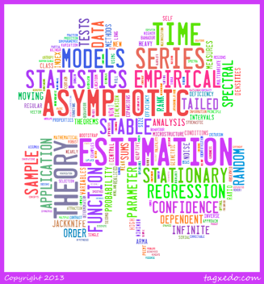

Welcome to My Site
My Research Interests
-
•Mathematical Statistics
-- I.i.d. and Dependent Random Variables
-- Necessary and Sufficient condition for CLT
-- Generalized CLT
-- Asymptotic Expansion of Statistics
-
•Time Series Analysis
-- Statistical Analysis of Heavy Tailed Process
-- Robust Methods in T.S.A
-- Inference of Tail Index
-- T.S.A under Non-regular Conditions
-
•Financial Engineering
-- Optimal Portfolio Theory
-- Multi-Period Model
(The picture is made on
my bibliography by Tagxedo.)
Yan LIU
Department of Pure and Applied Mathematics,
Graduate School of Fundamental Science and Engineering, Waseda University
3-4-1 Okubo, Shinjuku-ku, Tokyo 169-8555, Japan
Education:
2013-- PH.D, Pure and Applied Mathematics, Waseda
2011--2013 M.S, Pure and Applied Mathematics, Waseda
2008--2011 Applied Mathematics, Waseda
Societies:
A member of the Mathematical Society of Japan
Language Skills:
Japanese: Native
Chinese: Mother Tongue
English: Fluent
French: Some Knowledge
Italian: Some Knowledge
News:
September 26 --- Presentation of “A new way to estimate tail index” at Ehime Univ.

Research